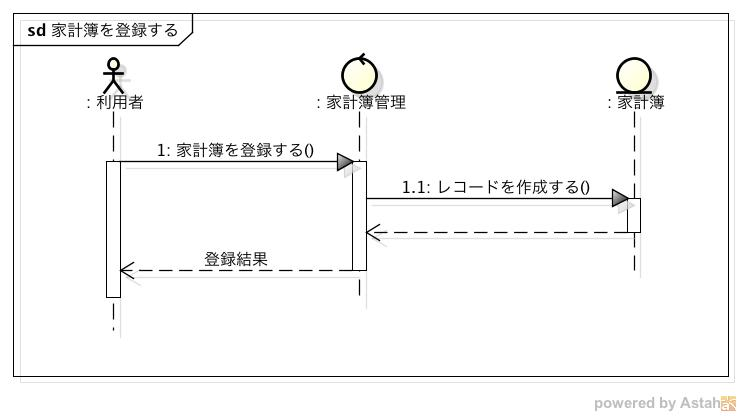
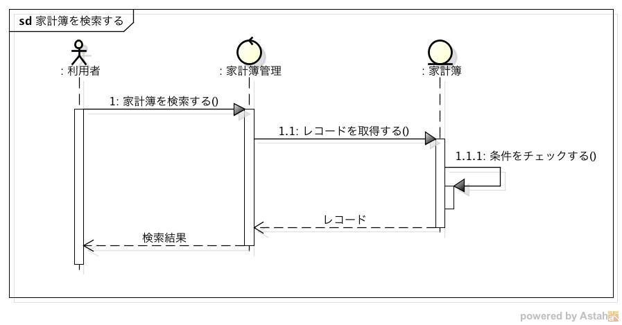
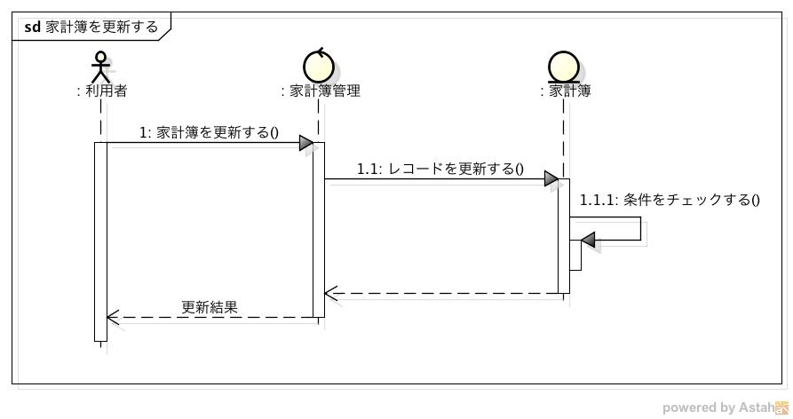
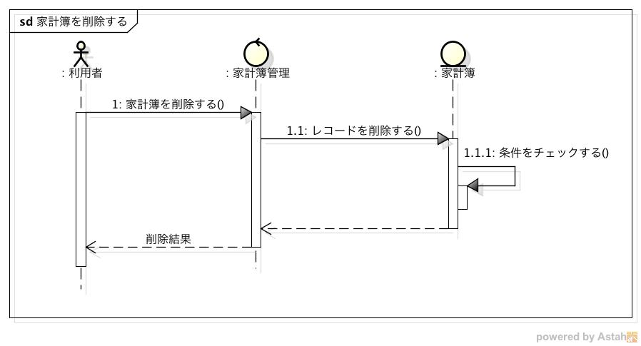
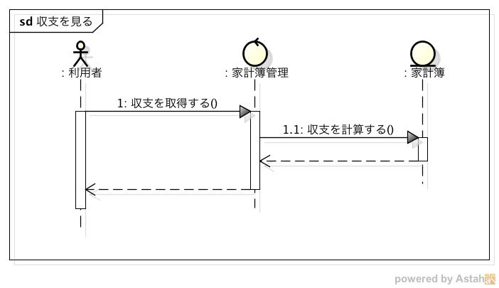
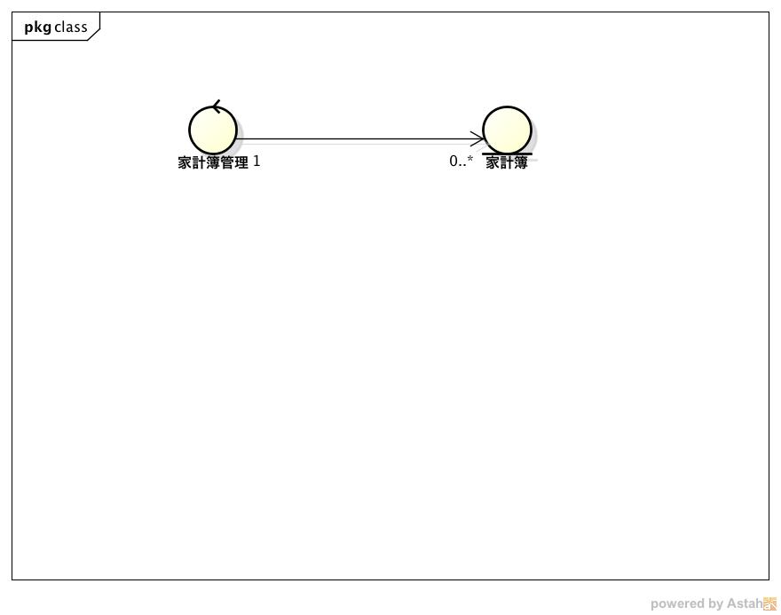

外部設計仕様¶
ユーザーインターフェース(UI)¶
- Viewer, Registerから受信したリクエストを処理するモジュールであるため，UIは存在しない
システムの振る舞い¶
家計簿を登録する¶
- 利用者がViewer, Registerで家計簿を登録すると，Managerにリクエストが送信される
- リクエストの内容に従い家計簿をデータベースに登録する
- 登録を実行した結果をViewer, Registerに送信する
家計簿を検索する¶
利用者がViewerで家計簿を検索すると，Managerにリクエストが送信される
リクエストを受信すると，Managerは入力のチェックを行う
チェックした結果に基づいて，以下の処理を実行する
正しい入力である場合
3-1. データベースから指定された条件を満たすレコードを取得する
3-2. 取得したレコードをViewerに送信する
不正な入力である場合
3-1. エラー通知をViewerに送信する
家計簿を更新する¶
利用者がViewerで家計簿を更新すると，Managerにリクエストが送信される
リクエストを受信すると，Managerは入力のチェックを行う
チェックした結果に基づいて，以下の処理を実行する
正しい入力である場合
3-1. データベースの指定された条件を満たすレコードを更新する
3-2. 更新されたレコードをViewerに送信する
不正な入力である場合
3-1. エラー通知をViewerに送信する
家計簿を削除する¶
利用者がViewerで家計簿を削除すると，Managerにリクエストが送信される
リクエストを受信すると，Managerは入力のチェックを行う
チェックした結果に基づいて，以下の処理を実行する
正しい入力である場合
3-1. データベースの指定された条件を満たすレコードを削除する
3-2. 削除通知をViewerに送信する
不正な入力である場合
3-1. エラー通知をViewerに送信する
収支を見る¶
利用者がViewerで収支確認メニューを選択すると，Managerにリクエストが送信される
リクエストを受信すると，Managerは入力のチェックを行う
チェックした結果に基づいて，以下の処理を実行する
正しい入力である場合
3-1. 収支を計算する
3-2. 計算結果をViewerに送信する
不正な入力である場合
3-1. エラー通知をViewerに送信する
システム構成¶
- 入力に従い家計簿を管理するコントローラと，管理される家計簿のみで構成される